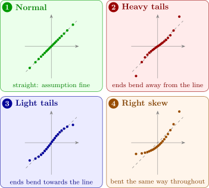
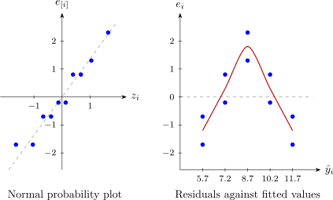
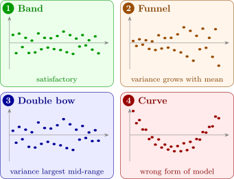

4.3 Residual plots
Graphs of the residuals are the main tool of model checking. They show many kinds of inadequacy at once, including some no single statistic is designed to detect. Any kind of residual can be plotted; the scaled residuals are usually preferred, because their sizes can be read on a common scale. The four standard plots are described in turn.
The normal probability plot
If the errors are normal, the ordered residuals should behave like an ordered sample from a normal distribution. Order the residuals, \(e_{[1]} \le e_{[2]} \le \cdots \le e_{[n]}\). The \(i\)th smallest of \(n\) observations from a distribution sits, roughly, at the point below which a fraction \[ P_i = \frac {i - \tfrac 12}{n} \] of the distribution lies. For the standard normal that point is the quantile \(z_i = \Phi ^{-1}(P_i)\). If the residuals are a normal sample with standard deviation \(\sigma \), then \(e_{[i]} \approx \sigma z_i\), and the points \((z_i, e_{[i]})\) lie close to a straight line through the origin with slope \(\sigma \). This graph is the normal probability plot. (Some software plots \(P_i\) on a specially scaled vertical axis and the residuals across; the straight-line criterion is the same.)
Departures from a straight line have recognisable shapes, shown in Figure 7. With heavy tails the extreme residuals are more extreme than normal ones, so the ends of the plot bend away from the line: down at the left, up at the right. With light tails they bend towards it. Skewness gives a curve that is bent the same way along its whole length. Moderate departures from normality are not a serious matter; heavy tails are the more dangerous, because a few large errors can pull the least-squares fit a long way.

Small samples fluctuate a good deal, and a plot of ten or twenty genuinely normal residuals often wobbles about the line. Judge the plot by its overall shape, not by individual points, and do not over-read it when \(n\) is small.
Example 4.3.1. A reaction was run twice at each of five catalyst concentrations \(x\) (%), and the yield \(y\) (g) recorded:
| \(x\) | 1 | 1 | 2 | 2 | 3 | 3 | 4 | 4 | 5 | 5 |
| \(y\) | 4 | 5 | 7 | 8 | 10 | 11 | 10 | 11 | 10 | 11 |
Fit a straight line, compute the residuals and draw their normal probability plot.
Solution. Here \(n = 10\), \(\sum x_i = 30\), \(\sum y_i = 87\), so \(\bar x = 3\) and \(\bar y = 8.7\). Also \(S_{xx} = \sum (x_i - 3)^2 = 2(4 + 1 + 0 + 1 + 4) = 20\) and \[ S_{xy} = \sum (x_i - 3)y_i = -2(9) - 1(15) + 0 + 1(21) + 2(21) = 30 , \] adding the two yields at each concentration. So \(\hat \beta _1 = 30/20 = 1.5\), \(\hat \beta _0 = 8.7 - 1.5 \times 3 = 4.2\), and \[ \hat y = 4.2 + 1.5x . \] The fitted values at \(x = 1, \dots , 5\) are \(5.7, 7.2, 8.7, 10.2, 11.7\). The residuals, and the leverages from Example 4.1.2, \(h_{ii} = 1/10 + (x_i - 3)^2/20\), are
| \(x\) | \(y\) | \(\hat y\) | \(e\) | \(h_{ii}\) |
| 1 | 4, 5 | 5.7 | \(-1.7\), \(-0.7\) | 0.30 |
| 2 | 7, 8 | 7.2 | \(-0.2\), \(0.8\) | 0.15 |
| 3 | 10, 11 | 8.7 | \(1.3\), \(2.3\) | 0.10 |
| 4 | 10, 11 | 10.2 | \(-0.2\), \(0.8\) | 0.15 |
| 5 | 10, 11 | 11.7 | \(-1.7\), \(-0.7\) | 0.30 |
\(SS_{\mathrm {Res}} = \sum e_i^2 = 15.1\) and \(MS_{\mathrm {Res}} = 15.1/8 = 1.8875\). (For the record, \(SS_T = 60.1\), \(R^2 = 0.749\) and \(F_0 = 45/1.8875 = 23.8\), far beyond \(F_{0.05,1,8} = 5.32\): by the usual summaries the line is a success.)
For the plot, order the residuals and pair them with the quantiles of \(P_i = (i - 0.5)/10\):
| \(i\) | \(e_{[i]}\) | \(P_i\) | \(z_i\) |
| 1 | \(-1.7\) | 0.05 | \(-1.64\) |
| 2 | \(-1.7\) | 0.15 | \(-1.04\) |
| 3 | \(-0.7\) | 0.25 | \(-0.67\) |
| 4 | \(-0.7\) | 0.35 | \(-0.39\) |
| 5 | \(-0.2\) | 0.45 | \(-0.13\) |
| 6 | \(-0.2\) | 0.55 | \(0.13\) |
| 7 | \(0.8\) | 0.65 | \(0.39\) |
| 8 | \(0.8\) | 0.75 | \(0.67\) |
| 9 | \(1.3\) | 0.85 | \(1.04\) |
| 10 | \(2.3\) | 0.95 | \(1.64\) |
The quantiles are symmetric, \(z_{11 - i} = -z_i\), so only five need looking up. The plot is the left panel of Figure 8. The points lie near a line of slope about \(\sqrt {1.8875} = 1.37\), with the usual small-sample wobble: there is no evidence against normality.

Residuals against fitted values
A plot of the residuals \(e_i\) (or \(r_i\), or \(t_i\)) against the fitted values \(\hat y_i\) is the most useful single plot. Theorem 4.1.1(iii) is the reason to plot against \(\hat y_i\): residuals and fitted values are uncorrelated, so when the model is right the plot should show no trend at all, just a horizontal band of points centred on zero. Plotting against the observed \(y_i\) instead would be a mistake; \(\mathbf {e}\) and \(\mathbf {y}\) are correlated, and the plot would show a rising trend even for a perfect model (Problem 4.7.2).
The common patterns are in Figure 9:
- (1)
- a horizontal band: no evidence of inadequacy;
- (2)
- a funnel opening outwards: the variance grows with the mean, as it often does for counts, or when the errors are a percentage of the response;
- (3)
- a double bow, wider in the middle: typical of proportions between \(0\) and \(1\), whose variance \(\pi (1 - \pi )\) is largest near \(\pi = 0.5\);
- (4)
- a curve: the model has the wrong shape; terms such as \(x^2\), or a transformation, or another regressor, are needed.
Patterns (2) and (3) are violations of the constant-variance assumption A2. The usual remedies, transforming \(y\) or fitting by weighted least squares, are the subject of a later section. Pattern (4) is a failure of the linear form itself, and is the most serious of the three, since then the fitted model is systematically wrong.

For the catalyst data the right panel of Figure 8 is pattern (4): the residuals are negative at both ends and positive in the middle. The yield rises with concentration and then levels off, and a straight line, forced to compromise, runs above the data at the ends and below it in the middle. The normal plot did not detect this, nor did \(R^2\) or the \(F\)-test. Subsection 4.6 gives a formal test that confirms it.
Residuals against the regressors
In multiple regression, also plot the residuals against each regressor \(x_j\) in turn. The patterns mean what they did before: a funnel indicates non-constant variance, a curve that \(x_j\) enters the model non-linearly (perhaps needing \(x_j^2\), or a transformation of \(x_j\)). It is also worth plotting the residuals against variables not in the model. Any visible trend means the omitted variable carries information about \(y\) that the model is missing.
Residuals in time order
If the observations were collected one after another, plot the residuals in the order of collection. Under A3 the plot should be patternless. Long runs of residuals of the same sign indicate positive autocorrelation, successive errors that tend to be alike; rapid alternation of sign indicates negative autocorrelation. Correlated errors are common when data are recorded over time, and they invalidate the variance formulas on which every test so far depends. A formal test, and models for correlated errors, are given in the section on autocorrelated errors.
Partial regression and partial residual plots
A plot of \(e_i\) against \(x_j\) shows whether \(x_j\) is correctly represented, but it does not show the effect of \(x_j\) itself, because \(x_j\) is correlated with the other regressors. Theorem 3.11.4 gives a plot that does.
Definition 4.3.2. Let \(\mathbf {X}_1\) be the columns of \(\mathbf {X}\) other than the one for \(x_j\), with hat matrix \(\mathbf {H}_1\). The partial regression plot (or added-variable plot) for \(x_j\) plots \[ \mathbf {v} = (\mathbf {I} - \mathbf {H}_1)\mathbf {y} \quad \text {against}\quad \mathbf {u} = (\mathbf {I} - \mathbf {H}_1)\mathbf {x}_j , \] the residuals from regressing \(y\) on the other regressors against the residuals from regressing \(x_j\) on them.
Theorem 4.3.3. In the partial regression plot for \(x_j\), the least-squares line through the origin has slope \(\hat \beta _j\), the coefficient of \(x_j\) in the full model, and its residuals are the residuals \(\mathbf {e}\) of the full model.
Proof. The slope of the line through the origin is \(\mathbf {u}^\top \mathbf {v}/\mathbf {u}^\top \mathbf {u}\). Since \(\mathbf {I} - \mathbf {H}_1\) is symmetric and idempotent, \(\mathbf {u}^\top \mathbf {v} = \mathbf {x}_j^\top (\mathbf {I} - \mathbf {H}_1)\mathbf {y} = \mathbf {u}^\top \mathbf {y}\), so the slope is \(\mathbf {u}^\top \mathbf {y}/\mathbf {u}^\top \mathbf {u} = \hat \beta _j\) by Theorem 3.11.4. The proof of that theorem showed \(\mathbf {H} = \mathbf {H}_1 + \mathbf {u}\mathbf {u}^\top /\mathbf {u}^\top \mathbf {u}\), so the residuals of the plot’s line are \[ \mathbf {v} - \hat \beta _j\mathbf {u} = (\mathbf {I} - \mathbf {H}_1)\mathbf {y} - \frac {\mathbf {u}\mathbf {u}^\top \mathbf {y}}{\mathbf {u}^\top \mathbf {u}} = (\mathbf {I} - \mathbf {H})\mathbf {y} = \mathbf {e} . \qedhere \] □
(Both \(\mathbf {u}\) and \(\mathbf {v}\) are residuals from a fit with an intercept, so both add to zero, and the least-squares line with an intercept is the same as the line through the origin.) So the partial regression plot is a scatter plot that does for multiple regression what the ordinary scatter plot does for simple regression: its slope is the estimated effect of \(x_j\), its scatter about the line is the residual scatter of the whole model, and a curve in it shows that \(x_j\) needs a non-linear term. Points that dominate the slope are easy to spot.
Solution. Regress \(x_2\) on \(x_1\). \(\bar x_1 = 3\), \(\bar x_2 = 2.5\), \(\sum (x_{i1} - 3)^2 = 4 + 1 + 1 + 0 + 1 + 9 = 16\) and \(\sum (x_{i1} - 3)x_{i2} = -4 - 1 - 3 + 0 + 4 + 9 = 5\). The slope is \(5/16 = 0.3125\), the intercept \(2.5 - 0.3125 \times 3 = 1.5625\), and \(\mathbf {u}\) is \(x_2\) minus the fitted values.
Regress \(y\) on \(x_1\). \(\bar y = 11.5\) and \(\sum (x_{i1} - 3)y_i = -12 - 9 - 11 + 0 + 15 + 54 = 37\). The slope is \(37/16 = 2.3125\), the intercept \(11.5 - 2.3125 \times 3 = 4.5625\), and \(\mathbf {v}\) is \(y\) minus the fitted values.
| Plot | 1 | 2 | 3 | 4 | 5 | 6 |
| \(u_i\) | \(0.125\) | \(-1.188\) | \(0.813\) | \(-0.500\) | \(1.188\) | \(-0.438\) |
| \(v_i\) | \(-0.875\) | \(-0.188\) | \(1.813\) | \(-1.500\) | \(1.188\) | \(-0.438\) |
(All the entries are exact multiples of \(1/16\); they are rounded here.) Then \(\mathbf {u}^\top \mathbf {v} = \mathbf {u}^\top \mathbf {u} = 3.9375\), so the slope is \(1 = \hat \beta _2\), and \(v_i - u_i = -1, 1, 1, -1, 0, 0\), the residuals of the full fit, as Theorem 4.3.3 says. Note also that \(\mathbf {u}^\top \mathbf {u} = 3.9375 = 1/C_{22}\), as in Theorem 3.11.4.
A related plot uses the full model only.
Definition 4.3.5. The partial residuals for \(x_j\) are \(e_i + \hat \beta _j x_{ij}\), and the partial residual plot (or component-plus-residual plot) plots them against \(x_{ij}\).
The partial residual adds back to the residual the part of the fit due to \(x_j\). Its plot against \(x_j\) also has least-squares slope \(\hat \beta _j\) (Problem 4.7.3), and, because the horizontal axis is \(x_j\) itself rather than a residual, it is the better plot for seeing what shape the dependence on \(x_j\) has, and so for choosing a transformation of \(x_j\).
Questions on this section
Stuck on something here? Ask below and it stays attached to this topic.